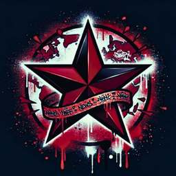

Zum Inhalt springen

WORLD REVOLUTION NEWS
News App 2 · Vorschau
⌕
Sprache
DE
EN
ES
FR
IT
PT
RU
EL
TR
Bisherige App
Nachrichten durchsuchen
Suchen
★
Nachrichten werden geladen …
⌂
Start
★
Für mich
◎
Entdecken
▶
Medien
▰
Gespeichert
←
☆
Nur auf diesem Gerät gespeichert
Deinen Feed einrichten
×
Regionen auswählen
Themen auswählen